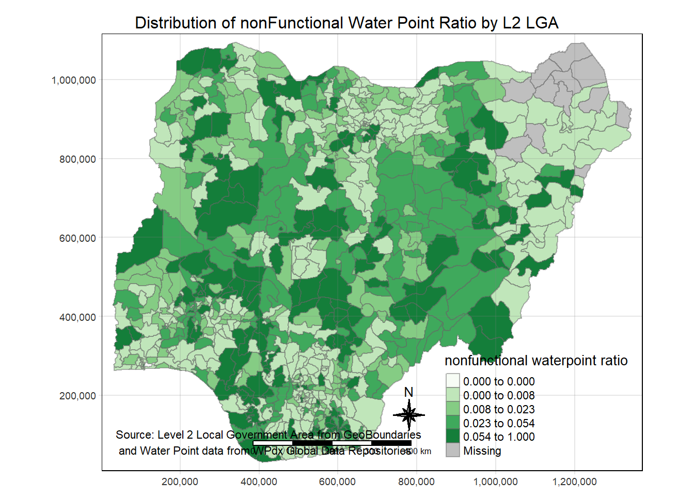
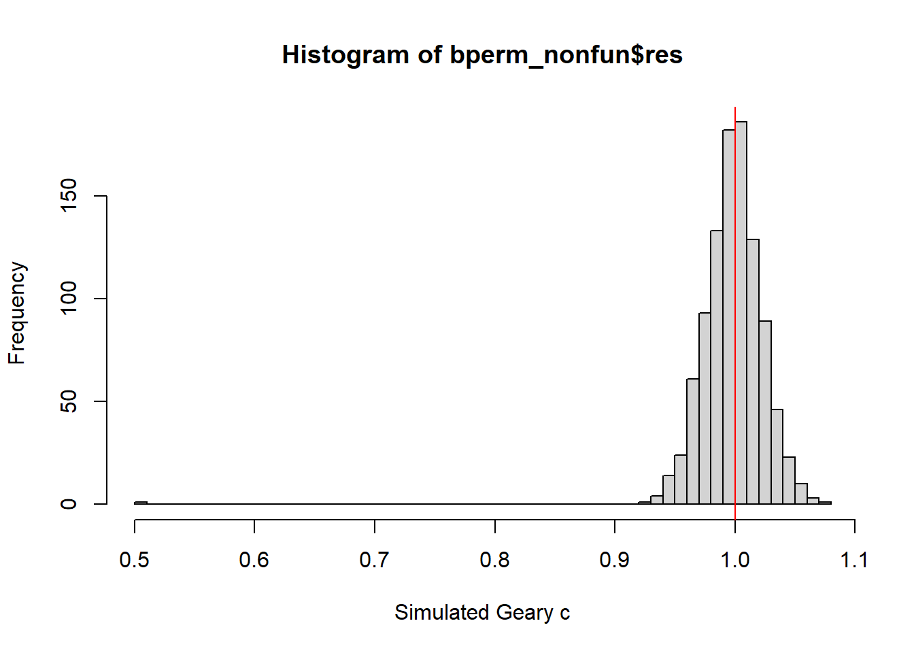
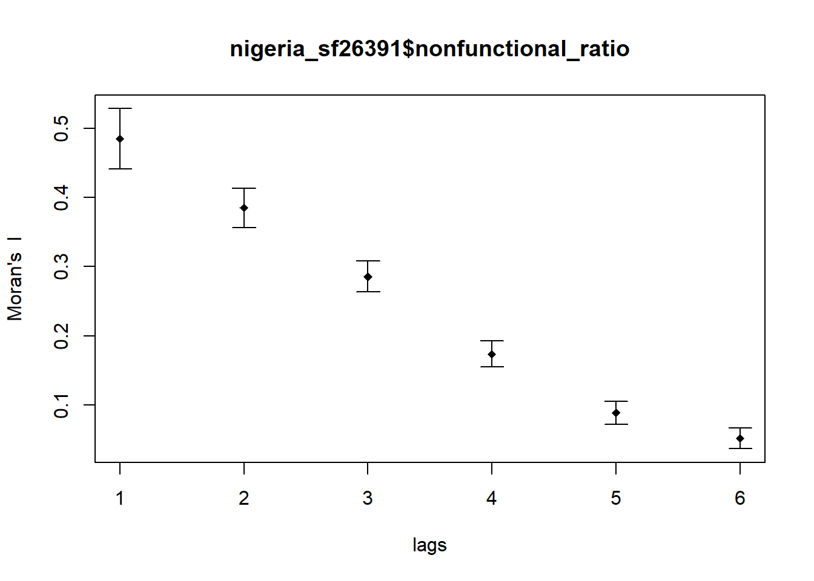
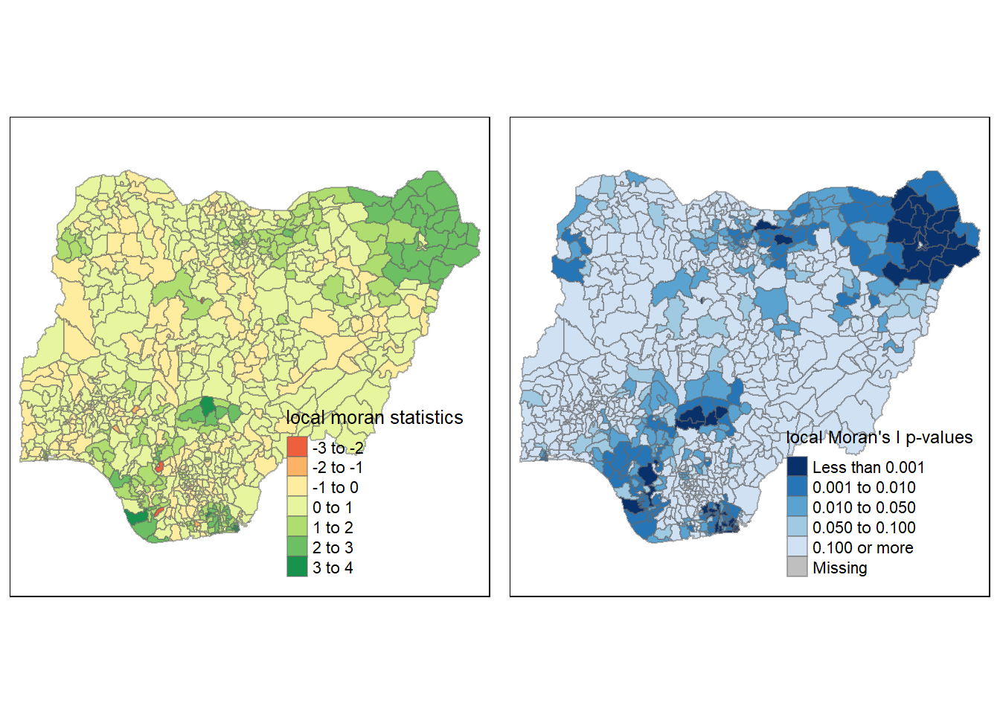

pacman::p_load(sf, tmap, tidyverse, spdep,ggplot2, dplyr)Take-home_Ex1
ISSS624 Take-Home Exercise 1
By Han Shumin
29 November 2022
1 Overview
Geospatial analytics hold tremendous potential to address complex problems facing society. In this study, you are tasked to apply appropriate global and local measures of spatial Association techniques to reveals the spatial patterns of Not Functional water points. For the purpose of this study, Nigeria will be used as the study country.
The specific tasks of this take-home exercise are as follows:
Using appropriate sf method, import the shapefile into R and save it in a simple feature data frame format. Note that there are three Projected Coordinate Systems of Nigeria, they are: EPSG: 26391, 26392, and 26303. You can use any one of them.
Using appropriate tidyr and dplyr methods, derive the proportion of functional and non-functional water point at LGA level.
Combining the geospatial and aspatial data frame into simple feature data frame.
Performing outliers/clusters analysis by using appropriate local measures of spatial association methods.
Performing hotspot areas analysis by using appropriate local measures of spatial association methods.
2 The Dataset
Apstial data
For the purpose of this assignment, data from WPdx Global Data Repositories will be used. There are two versions of the data. They are: WPdx-Basic and WPdx+. You are required to use WPdx+ data set.
Geospatial data
Nigeria Level-2 Administrative Boundary (also known as Local Government Area) polygon features GIS data will be used in this take-home exercise. The data can be downloaded either from The Humanitarian Data Exchange portal or geoBoundaries.
3 Setting Up Working Environment
The code chunk below will install and load tidyverse and sf packages.
4 Geopsatial Data Wrangling
4.1 Loading up the Geospatial Data
nigeria_sf <- st_read(dsn = "data/geospatial",
layer = "geoBoundaries-NGA-ADM2")Reading layer `geoBoundaries-NGA-ADM2' from data source
`C:\Users\Shumin\Documents\Documents Files\Learning\SMU\ISSS624 Applied Geospatial Analytics\shumin86718\ISSS624\Take-home_Ex\Take-home_Ex1\data\geospatial'
using driver `ESRI Shapefile'
Simple feature collection with 774 features and 5 fields
Geometry type: MULTIPOLYGON
Dimension: XY
Bounding box: xmin: 2.668534 ymin: 4.273007 xmax: 14.67882 ymax: 13.89442
Geodetic CRS: WGS 844.2 Import csv file into R environment
nigeria_data <- read_csv("data/aspatial/nigeria.csv")Rows: 95008 Columns: 50
── Column specification ────────────────────────────────────────────────────────
Delimiter: ","
chr (27): #source, #status_id, #water_source_clean, #water_source_category, ...
dbl (19): #lat_deg, #lon_deg, #install_year, #distance_to_primary_road, #dis...
lgl (4): is_urban, latest_record, lat_deg_original, lon_deg_original
ℹ Use `spec()` to retrieve the full column specification for this data.
ℹ Specify the column types or set `show_col_types = FALSE` to quiet this message.nigeria_data[rowSums(is.na(nigeria_data))!=0,]# A tibble: 95,008 × 50
`#source` #lat_…¹ #lon_…² #stat…³ #wate…⁴ #wate…⁵ #wate…⁶ #wate…⁷ #clea…⁸
<chr> <dbl> <dbl> <chr> <chr> <chr> <chr> <chr> <chr>
1 GRID3 5.81 7.92 Unknown <NA> <NA> Tapsta… Tapsta… Nigeria
2 GRID3 7.98 5.12 Unknown <NA> <NA> Tapsta… Tapsta… Nigeria
3 WaterAid 6.78 7.66 Yes Boreho… Well Hand P… Hand P… Nigeria
4 WaterAid 6.96 7.78 Yes Boreho… Well Hand P… Hand P… Nigeria
5 Living Water… 7.37 8.96 Yes Boreho… Well Hand P… Hand P… Nigeria
6 Living Water… 7.16 9.04 Yes Boreho… Well Mechan… Mechan… Nigeria
7 Living Water… 7.32 9.02 Yes Boreho… Well Mechan… Mechan… Nigeria
8 GRID3 5.57 6.96 Unknown Boreho… Well <NA> <NA> Nigeria
9 GRID3 5.99 8.26 Unknown Boreho… Well <NA> <NA> Nigeria
10 GRID3 9.01 3.92 Unknown Boreho… Well <NA> <NA> Nigeria
# … with 94,998 more rows, 41 more variables: `#clean_adm1` <chr>,
# `#clean_adm2` <chr>, `#install_year` <dbl>, `#management_clean` <chr>,
# `#status_clean` <chr>, `#pay` <chr>, `#subjective_quality` <chr>,
# `#country_id` <chr>, `#distance_to_primary_road` <dbl>,
# `#distance_to_secondary_road` <dbl>, `#distance_to_tertiary_road` <dbl>,
# `#distance_to_city` <dbl>, `#distance_to_town` <dbl>, rehab_priority <dbl>,
# water_point_population <dbl>, local_population_1km <dbl>, …nigeria_data$`#status_clean`[is.na(nigeria_data$`#status_clean`)] <- "Unknown"functional <- nigeria_data %>%
filter(`#status_clean` %in% c("Functional", "Functional but not in use" , "Functional but needs repair")) %>%
select(`#lat_deg`, `#lon_deg`, `#water_source_category`, `#clean_adm2`, `#status_clean`)nonfunctional <- nigeria_data %>%
filter(`#status_clean` %in% c("Abandoned/Decommissioned", "Abandoned", "Non functional due to dry season", "Non-Functional", "Non-Functional due to dry season")) %>%
select(`#lat_deg`, `#lon_deg`, `#water_source_category`, `#clean_adm2`, `#status_clean`)unknown <- nigeria_data %>%
filter(`#status_clean` %in% c("Unknown")) %>%
select(`#lat_deg`, `#lon_deg`, `#water_source_category`, `#clean_adm2`, `#status_clean`)st_crs(nigeria_sf)Coordinate Reference System:
User input: WGS 84
wkt:
GEOGCRS["WGS 84",
ENSEMBLE["World Geodetic System 1984 ensemble",
MEMBER["World Geodetic System 1984 (Transit)"],
MEMBER["World Geodetic System 1984 (G730)"],
MEMBER["World Geodetic System 1984 (G873)"],
MEMBER["World Geodetic System 1984 (G1150)"],
MEMBER["World Geodetic System 1984 (G1674)"],
MEMBER["World Geodetic System 1984 (G1762)"],
MEMBER["World Geodetic System 1984 (G2139)"],
ELLIPSOID["WGS 84",6378137,298.257223563,
LENGTHUNIT["metre",1]],
ENSEMBLEACCURACY[2.0]],
PRIMEM["Greenwich",0,
ANGLEUNIT["degree",0.0174532925199433]],
CS[ellipsoidal,2],
AXIS["geodetic latitude (Lat)",north,
ORDER[1],
ANGLEUNIT["degree",0.0174532925199433]],
AXIS["geodetic longitude (Lon)",east,
ORDER[2],
ANGLEUNIT["degree",0.0174532925199433]],
USAGE[
SCOPE["Horizontal component of 3D system."],
AREA["World."],
BBOX[-90,-180,90,180]],
ID["EPSG",4326]]nigeria_data_sf <- st_as_sf(nigeria_data,
coords = c("#lon_deg", "#lat_deg"),
crs=4326) functional <- st_as_sf(functional,
coords = c("#lon_deg", "#lat_deg"),
crs=4326) nonfunctional <- st_as_sf(nonfunctional,
coords = c("#lon_deg", "#lat_deg"),
crs=4326)unknown <- st_as_sf(unknown,
coords = c("#lon_deg", "#lat_deg"),
crs=4326)nigeria_sf$WaterpointCount <- lengths(st_intersects(nigeria_sf, nigeria_data_sf))nigeria_sf$functional<- lengths(st_intersects(nigeria_sf, functional))nigeria_sf$nonfunctional <- lengths(st_intersects(nigeria_sf, nonfunctional))nigeria_sf$unknown <- lengths(st_intersects(nigeria_sf, unknown))nigeria_sf <- nigeria_sf %>%
mutate(`functional_ratio` = `functional`/`WaterpointCount`)nigeria_sf <- nigeria_sf %>%
mutate(`nonfunctional_ratio` = `nonfunctional`/`WaterpointCount`)nigeria_sf <- nigeria_sf %>%
mutate(`unknown_ratio` = `unknown`/`WaterpointCount`)nigeria_sf26391 <- st_transform(nigeria_sf,
crs = 26391)st_crs(nigeria_sf26391)Coordinate Reference System:
User input: EPSG:26391
wkt:
PROJCRS["Minna / Nigeria West Belt",
BASEGEOGCRS["Minna",
DATUM["Minna",
ELLIPSOID["Clarke 1880 (RGS)",6378249.145,293.465,
LENGTHUNIT["metre",1]]],
PRIMEM["Greenwich",0,
ANGLEUNIT["degree",0.0174532925199433]],
ID["EPSG",4263]],
CONVERSION["Nigeria West Belt",
METHOD["Transverse Mercator",
ID["EPSG",9807]],
PARAMETER["Latitude of natural origin",4,
ANGLEUNIT["degree",0.0174532925199433],
ID["EPSG",8801]],
PARAMETER["Longitude of natural origin",4.5,
ANGLEUNIT["degree",0.0174532925199433],
ID["EPSG",8802]],
PARAMETER["Scale factor at natural origin",0.99975,
SCALEUNIT["unity",1],
ID["EPSG",8805]],
PARAMETER["False easting",230738.26,
LENGTHUNIT["metre",1],
ID["EPSG",8806]],
PARAMETER["False northing",0,
LENGTHUNIT["metre",1],
ID["EPSG",8807]]],
CS[Cartesian,2],
AXIS["(E)",east,
ORDER[1],
LENGTHUNIT["metre",1]],
AXIS["(N)",north,
ORDER[2],
LENGTHUNIT["metre",1]],
USAGE[
SCOPE["Engineering survey, topographic mapping."],
AREA["Nigeria - onshore west of 6°30'E, onshore and offshore shelf."],
BBOX[3.57,2.69,13.9,6.5]],
ID["EPSG",26391]]tm_shape(nigeria_sf26391)+
tm_fill("functional_ratio",
style = "quantile",
palette = "Blues",
title = "functional waterpoint ratio") +
tm_layout(main.title = "Distribution of Functional Water Point Ratio by L2 LGA",
main.title.position = "center",
main.title.size = 1,
legend.height = 0.45,
legend.width = 0.35,
frame = TRUE) +
tm_borders(alpha = 0.5) +
tm_compass(type="8star", size = 2) +
tm_scale_bar() +
tm_grid(alpha =0.2) +
tm_credits("Source: Level 2 Local Government Area from GeoBoundaries\n and Water Point data from WPdx Global Data Repositories",
position = c("left", "bottom"))
tm_shape(nigeria_sf26391)+
tm_fill("nonfunctional_ratio",
style = "quantile",
palette = "Greens",
title = "nonfunctional waterpoint ratio") +
tm_layout(main.title = "Distribution of nonFunctional Water Point Ratio by L2 LGA",
main.title.position = "center",
main.title.size = 1,
legend.height = 0.45,
legend.width = 0.35,
frame = TRUE) +
tm_borders(alpha = 0.5) +
tm_compass(type="8star", size = 2) +
tm_scale_bar() +
tm_grid(alpha =0.2) +
tm_credits("Source: Level 2 Local Government Area from GeoBoundaries\n and Water Point data from WPdx Global Data Repositories",
position = c("left", "bottom"))
tm_shape(nigeria_sf26391)+
tm_fill("unknown_ratio",
style = "quantile",
palette = "Oranges",
title = "unknown waterpoint ratio") +
tm_layout(main.title = "Distribution of unknown Water Point Ratio by L2 LGA",
main.title.position = "center",
main.title.size = 1,
legend.height = 0.45,
legend.width = 0.35,
frame = TRUE) +
tm_borders(alpha = 0.5) +
tm_compass(type="8star", size = 2) +
tm_scale_bar() +
tm_grid(alpha =0.2) +
tm_credits("Source: Level 2 Local Government Area from GeoBoundaries\n and Water Point data from WPdx Global Data Repositories",
position = c("left", "bottom"))
5 Spatial Weights and Applications
5.1 Computing Contiguity Spatial Weights
5.1.1 Computing (QUEEN) contiguity based neighbours
wm_q_nigeria_sf26391 <- poly2nb(nigeria_sf26391, queen=TRUE)
summary(wm_q_nigeria_sf26391)Neighbour list object:
Number of regions: 774
Number of nonzero links: 4440
Percentage nonzero weights: 0.7411414
Average number of links: 5.736434
1 region with no links:
86
Link number distribution:
0 1 2 3 4 5 6 7 8 9 10 11 12 14
1 2 14 57 125 182 140 122 72 41 12 4 1 1
2 least connected regions:
138 560 with 1 link
1 most connected region:
508 with 14 linksstr(wm_q_nigeria_sf26391)List of 774
$ : int [1:4] 2 548 624 721
$ : int [1:3] 1 624 721
$ : int [1:3] 261 447 507
$ : int [1:7] 257 263 436 446 454 466 709
$ : int [1:5] 203 208 331 617 738
$ : int [1:7] 170 217 218 337 379 553 758
$ : int [1:6] 8 176 214 281 349 555
$ : int [1:4] 7 214 544 555
$ : int [1:5] 18 104 337 601 757
$ : int [1:7] 25 216 325 364 365 528 632
$ : int [1:7] 26 27 43 157 191 524 565
$ : int [1:8] 135 263 417 446 520 690 695 709
$ : int [1:5] 31 37 471 583 584
$ : int [1:8] 170 362 363 546 577 581 589 626
$ : int [1:7] 49 82 177 297 306 352 580
$ : int [1:5] 30 187 328 357 360
$ : int [1:3] 35 638 639
$ : int [1:5] 9 19 104 576 601
$ : int [1:6] 18 103 104 376 574 576
$ : int [1:5] 419 466 471 508 641
$ : int [1:5] 61 162 269 520 596
$ : int [1:3] 49 297 326
$ : int [1:5] 54 291 537 618 619
$ : int [1:4] 123 527 673 761
$ : int [1:7] 10 181 216 314 325 366 552
$ : int [1:4] 11 27 191 562
$ : int [1:5] 11 26 562 565 762
$ : int [1:7] 29 173 300 315 316 358 369
$ : int [1:7] 28 173 182 358 378 460 591
$ : int [1:8] 16 38 39 186 192 329 357 360
$ : int [1:6] 13 94 211 471 561 584
$ : int [1:3] 51 62 693
$ : int [1:6] 166 227 238 655 743 750
$ : int [1:7] 42 104 213 330 553 559 757
$ : int [1:7] 17 275 295 378 460 638 639
$ : int [1:8] 50 107 164 247 408 432 455 759
$ : int [1:11] 13 38 40 211 212 320 570 583 584 620 ...
$ : int [1:7] 30 37 39 40 41 192 320
$ : int [1:4] 30 38 186 320
$ : int [1:4] 37 38 41 620
$ : int [1:5] 38 40 192 620 634
$ : int [1:4] 34 136 137 559
$ : int [1:3] 11 157 524
$ : int [1:6] 45 290 303 328 360 634
$ : int [1:3] 44 290 303
$ : int [1:4] 438 521 668 742
$ : int [1:5] 166 234 238 698 750
$ : int [1:4] 113 265 386 701
$ : int [1:7] 15 22 51 297 326 580 623
$ : int [1:8] 36 98 107 409 416 432 681 696
$ : int [1:8] 32 49 62 207 461 580 623 693
$ : int [1:6] 53 78 80 165 602 636
$ : int [1:8] 52 80 199 280 602 621 622 739
$ : int [1:7] 23 79 293 294 532 537 618
$ : int [1:3] 122 430 605
$ : int [1:5] 77 376 533 576 728
$ : int [1:4] 58 199 322 621
$ : int [1:7] 57 322 323 522 523 621 622
$ : int [1:5] 88 128 493 700 714
$ : int [1:7] 61 158 561 578 592 596 626
$ : int [1:5] 21 60 269 596 626
$ : int [1:6] 32 51 207 461 462 693
$ : int [1:6] 90 237 384 416 467 765
$ : int [1:8] 65 74 109 113 131 148 251 407
$ : int [1:5] 64 74 113 265 701
$ : int [1:6] 103 104 288 351 559 574
$ : int [1:7] 304 348 511 594 609 640 694
$ : int [1:2] 157 191
$ : int [1:9] 115 140 146 248 273 274 473 500 512
$ : int [1:5] 71 301 341 343 610
$ : int [1:9] 70 173 298 299 301 343 344 550 625
$ : int [1:8] 73 361 594 607 609 638 639 665
$ : int [1:6] 72 361 374 377 665 666
$ : int [1:6] 64 65 109 683 701 754
$ : int [1:7] 272 398 422 433 485 501 768
$ : int [1:8] 254 287 427 459 547 647 677 751
$ : int [1:6] 56 533 534 579 716 728
$ : int [1:7] 52 79 80 165 215 532 579
$ : int [1:5] 54 78 532 579 618
$ : int [1:5] 52 53 78 215 739
$ : int [1:5] 99 145 233 426 689
$ : int [1:3] 15 352 580
$ : int [1:4] 132 258 383 414
$ : int [1:5] 123 148 437 673 692
$ : int [1:7] 105 156 394 654 675 707 712
$ : int 0
$ : int [1:6] 151 221 226 399 410 486
$ : int [1:6] 59 150 489 648 700 714
$ : int [1:7] 260 408 416 463 674 681 759
$ : int [1:9] 63 163 232 236 237 452 497 710 765
$ : int [1:4] 160 271 406 440
$ : int [1:6] 119 390 392 487 656 668
$ : int [1:6] 123 354 402 607 665 666
$ : int [1:8] 31 158 436 471 520 561 596 709
$ : int [1:6] 391 392 405 469 656 708
$ : int [1:7] 97 139 389 403 420 451 653
$ : int [1:5] 96 389 451 662 773
$ : int [1:5] 50 231 432 696 708
$ : int [1:5] 81 426 689 760 769
[list output truncated]
- attr(*, "class")= chr "nb"
- attr(*, "region.id")= chr [1:774] "1" "2" "3" "4" ...
- attr(*, "call")= language poly2nb(pl = nigeria_sf26391, queen = TRUE)
- attr(*, "type")= chr "queen"
- attr(*, "sym")= logi TRUE5.1.2 Creating (ROOK) contiguity based neighbours
wm_r_nigeria_sf26391 <- poly2nb(nigeria_sf26391, queen=FALSE)
summary(wm_r_nigeria_sf26391)Neighbour list object:
Number of regions: 774
Number of nonzero links: 4420
Percentage nonzero weights: 0.7378029
Average number of links: 5.710594
1 region with no links:
86
Link number distribution:
0 1 2 3 4 5 6 7 8 9 10 11 12 14
1 2 14 59 127 181 141 124 66 42 11 4 1 1
2 least connected regions:
138 560 with 1 link
1 most connected region:
508 with 14 linksstr(wm_r_nigeria_sf26391)List of 774
$ : int [1:4] 2 548 624 721
$ : int [1:3] 1 624 721
$ : int [1:3] 261 447 507
$ : int [1:7] 257 263 436 446 454 466 709
$ : int [1:5] 203 208 331 617 738
$ : int [1:6] 170 217 218 337 379 553
$ : int [1:6] 8 176 214 281 349 555
$ : int [1:4] 7 214 544 555
$ : int [1:5] 18 104 337 601 757
$ : int [1:7] 25 216 325 364 365 528 632
$ : int [1:7] 26 27 43 157 191 524 565
$ : int [1:8] 135 263 417 446 520 690 695 709
$ : int [1:5] 31 37 471 583 584
$ : int [1:8] 170 362 363 546 577 581 589 626
$ : int [1:7] 49 82 177 297 306 352 580
$ : int [1:5] 30 187 328 357 360
$ : int [1:3] 35 638 639
$ : int [1:5] 9 19 104 576 601
$ : int [1:6] 18 103 104 376 574 576
$ : int [1:5] 419 466 471 508 641
$ : int [1:5] 61 162 269 520 596
$ : int [1:3] 49 297 326
$ : int [1:5] 54 291 537 618 619
$ : int [1:4] 123 527 673 761
$ : int [1:7] 10 181 216 314 325 366 552
$ : int [1:4] 11 27 191 562
$ : int [1:5] 11 26 562 565 762
$ : int [1:7] 29 173 300 315 316 358 369
$ : int [1:7] 28 173 182 358 378 460 591
$ : int [1:8] 16 38 39 186 192 329 357 360
$ : int [1:6] 13 94 211 471 561 584
$ : int [1:3] 51 62 693
$ : int [1:6] 166 227 238 655 743 750
$ : int [1:7] 42 104 213 330 553 559 757
$ : int [1:7] 17 275 295 378 460 638 639
$ : int [1:8] 50 107 164 247 408 432 455 759
$ : int [1:11] 13 38 40 211 212 320 570 583 584 620 ...
$ : int [1:7] 30 37 39 40 41 192 320
$ : int [1:4] 30 38 186 320
$ : int [1:4] 37 38 41 620
$ : int [1:5] 38 40 192 620 634
$ : int [1:4] 34 136 137 559
$ : int [1:3] 11 157 524
$ : int [1:6] 45 290 303 328 360 634
$ : int [1:3] 44 290 303
$ : int [1:4] 438 521 668 742
$ : int [1:5] 166 234 238 698 750
$ : int [1:4] 113 265 386 701
$ : int [1:7] 15 22 51 297 326 580 623
$ : int [1:8] 36 98 107 409 416 432 681 696
$ : int [1:7] 32 49 62 207 580 623 693
$ : int [1:6] 53 78 80 165 602 636
$ : int [1:8] 52 80 199 280 602 621 622 739
$ : int [1:7] 23 79 293 294 532 537 618
$ : int [1:3] 122 430 605
$ : int [1:5] 77 376 533 576 728
$ : int [1:4] 58 199 322 621
$ : int [1:7] 57 322 323 522 523 621 622
$ : int [1:5] 88 128 493 700 714
$ : int [1:7] 61 158 561 578 592 596 626
$ : int [1:5] 21 60 269 596 626
$ : int [1:5] 32 51 461 462 693
$ : int [1:6] 90 237 384 416 467 765
$ : int [1:8] 65 74 109 113 131 148 251 407
$ : int [1:5] 64 74 113 265 701
$ : int [1:6] 103 104 288 351 559 574
$ : int [1:7] 304 348 511 594 609 640 694
$ : int [1:2] 157 191
$ : int [1:9] 115 140 146 248 273 274 473 500 512
$ : int [1:5] 71 301 341 343 610
$ : int [1:9] 70 173 298 299 301 343 344 550 625
$ : int [1:8] 73 361 594 607 609 638 639 665
$ : int [1:6] 72 361 374 377 665 666
$ : int [1:6] 64 65 109 683 701 754
$ : int [1:7] 272 398 422 433 485 501 768
$ : int [1:8] 254 287 427 459 547 647 677 751
$ : int [1:6] 56 533 534 579 716 728
$ : int [1:7] 52 79 80 165 215 532 579
$ : int [1:5] 54 78 532 579 618
$ : int [1:5] 52 53 78 215 739
$ : int [1:5] 99 145 233 426 689
$ : int [1:3] 15 352 580
$ : int [1:4] 132 258 383 414
$ : int [1:5] 123 148 437 673 692
$ : int [1:7] 105 156 394 654 675 707 712
$ : int 0
$ : int [1:6] 151 221 226 399 410 486
$ : int [1:6] 59 150 489 648 700 714
$ : int [1:7] 260 408 416 463 674 681 759
$ : int [1:9] 63 163 232 236 237 452 497 710 765
$ : int [1:4] 160 271 406 440
$ : int [1:6] 119 390 392 487 656 668
$ : int [1:6] 123 354 402 607 665 666
$ : int [1:8] 31 158 436 471 520 561 596 709
$ : int [1:6] 391 392 405 469 656 708
$ : int [1:7] 97 139 389 403 420 451 653
$ : int [1:5] 96 389 451 662 773
$ : int [1:5] 50 231 432 696 708
$ : int [1:5] 81 426 689 760 769
[list output truncated]
- attr(*, "class")= chr "nb"
- attr(*, "region.id")= chr [1:774] "1" "2" "3" "4" ...
- attr(*, "call")= language poly2nb(pl = nigeria_sf26391, queen = FALSE)
- attr(*, "type")= chr "rook"
- attr(*, "sym")= logi TRUElongitude <- map_dbl(nigeria_sf26391$geometry, ~st_centroid(.x)[[1]])latitude<- map_dbl(nigeria_sf26391$geometry, ~st_centroid(.x)[[2]])coords <- cbind(longitude, latitude)head(coords) longitude latitude
[1,] 549364.0 123694.9
[2,] 547123.4 120376.5
[3,] 1189496.9 1059770.9
[4,] 489057.4 534262.6
[5,] 593718.2 113824.1
[6,] 642618.7 251222.35.1.3 Plotting Queen contiguity against ROOK contiguity based neighbours maps
plot(nigeria_sf26391$geometry, border="lightgrey")
plot(wm_q_nigeria_sf26391, coords, pch = 19, cex = 0.4, add = TRUE, col= "red")
plot(nigeria_sf26391$geometry, border="lightgrey")
plot(wm_r_nigeria_sf26391, coords, pch = 19, cex = 0.4, add = TRUE, col = "red")6 Global Spatial Autocorrelation
6.1 Row-standardized weights matrix
nigeria_sf26391$`functional_ratio`[is.na(nigeria_sf26391$`functional_ratio`)] <- 0nigeria_sf26391$`nonfunctional_ratio`[is.na(nigeria_sf26391$`nonfunctional_ratio`)] <- 0nigeria_sf26391$`unknown_ratio`[is.na(nigeria_sf26391$`unknown_ratio`)] <- 0set.ZeroPolicyOption(TRUE)[1] FALSErswm_q <- nb2listw(wm_q_nigeria_sf26391, style="W", zero.policy = TRUE)
rswm_qCharacteristics of weights list object:
Neighbour list object:
Number of regions: 774
Number of nonzero links: 4440
Percentage nonzero weights: 0.7411414
Average number of links: 5.736434
1 region with no links:
86
Weights style: W
Weights constants summary:
n nn S0 S1 S2
W 773 597529 773 285.0658 3198.4146.2 Global Spatial Autocorrelation: Moran’s I
6.2.1 Moron’s I test for nonfunctional waterpoint count
moran.test(nigeria_sf26391$`nonfunctional_ratio`,
listw=rswm_q,
na.action=na.omit)
Moran I test under randomisation
data: nigeria_sf26391$nonfunctional_ratio
weights: rswm_q n reduced by no-neighbour observations
Moran I statistic standard deviate = 22.343, p-value < 2.2e-16
alternative hypothesis: greater
sample estimates:
Moran I statistic Expectation Variance
0.4850220148 -0.0012953368 0.0004737605 Computing Monte Carlo Moran’s I
set.seed(1234)
bperm_nonfun= moran.mc(nigeria_sf26391$`nonfunctional_ratio`,
listw=rswm_q,
nsim=999,
na.action=na.omit)
bperm_nonfun
Monte-Carlo simulation of Moran I
data: nigeria_sf26391$nonfunctional_ratio
weights: rswm_q
number of simulations + 1: 1000
statistic = 0.48502, observed rank = 1000, p-value = 0.001
alternative hypothesis: greaterVisualising Monte Carlo Moran’s I
mean(bperm_nonfun$res[1:999])[1] -0.0017128var(bperm_nonfun$res[1:999])[1] 0.0004496655summary(bperm_nonfun$res[1:999]) Min. 1st Qu. Median Mean 3rd Qu. Max.
-0.062191 -0.016560 -0.001624 -0.001713 0.013141 0.058463 hist(bperm_nonfun$res,
freq=TRUE,
breaks=50,
xlab="Simulated Moran's I")
abline(v=0,
col="red") 
6.3 Global Spatial Autocorrelation: Geary’s
geary.test(nigeria_sf26391$`nonfunctional_ratio`,
listw=rswm_q)
Geary C test under randomisation
data: nigeria_sf26391$nonfunctional_ratio
weights: rswm_q
Geary C statistic standard deviate = 21.268, p-value < 2.2e-16
alternative hypothesis: Expectation greater than statistic
sample estimates:
Geary C statistic Expectation Variance
0.5051702703 1.0000000000 0.0005413473 Computing Monte Carlo Geary’s C
set.seed(1234)
bperm_nonfun=geary.mc(nigeria_sf26391$`nonfunctional_ratio`,
listw=rswm_q,
nsim=999)
bperm_nonfun
Monte-Carlo simulation of Geary C
data: nigeria_sf26391$nonfunctional_ratio
weights: rswm_q
number of simulations + 1: 1000
statistic = 0.50517, observed rank = 1, p-value = 0.001
alternative hypothesis: greaterVisualising the Monte Carlo Geary’s C
mean(bperm_nonfun$res[1:999])[1] 0.9989763var(bperm_nonfun$res[1:999])[1] 0.0005187001summary(bperm_nonfun$res[1:999]) Min. 1st Qu. Median Mean 3rd Qu. Max.
0.9274 0.9836 0.9995 0.9990 1.0139 1.0764 hist(bperm_nonfun$res, freq=TRUE, breaks=50, xlab="Simulated Geary c")
abline(v=1, col="red") 
6.4 Spatial Correlogram
6.4.1 Compute Moran’s I correlogram
MI_corr <- sp.correlogram(wm_q_nigeria_sf26391,
nigeria_sf26391$`nonfunctional_ratio`,
order=6,
method="I",
style="W")
plot(MI_corr)
print(MI_corr)Spatial correlogram for nigeria_sf26391$nonfunctional_ratio
method: Moran's I
estimate expectation variance standard deviate Pr(I) two sided
1 (773) 4.8502e-01 -1.2953e-03 4.7376e-04 22.3429 < 2.2e-16
2 (773) 3.8518e-01 -1.2953e-03 2.0302e-04 27.1243 < 2.2e-16
3 (773) 2.8566e-01 -1.2953e-03 1.2247e-04 25.9301 < 2.2e-16
4 (773) 1.7345e-01 -1.2953e-03 8.8006e-05 18.6269 < 2.2e-16
5 (773) 8.8675e-02 -1.2953e-03 6.9106e-05 10.8228 < 2.2e-16
6 (773) 5.1676e-02 -1.2953e-03 5.7653e-05 6.9764 3.027e-12
1 (773) ***
2 (773) ***
3 (773) ***
4 (773) ***
5 (773) ***
6 (773) ***
---
Signif. codes: 0 '***' 0.001 '**' 0.01 '*' 0.05 '.' 0.1 ' ' 16.4.2 Compute Geary’s C correlogram and plot
GC_corr <- sp.correlogram(wm_q_nigeria_sf26391,
nigeria_sf26391$`nonfunctional_ratio`,
order=6,
method="C",
style="W")
plot(GC_corr)
print(GC_corr)Spatial correlogram for nigeria_sf26391$nonfunctional_ratio
method: Geary's C
estimate expectation variance standard deviate Pr(I) two sided
1 (773) 0.50517027 1.00000000 0.00054135 -21.2676 < 2.2e-16 ***
2 (773) 0.60046790 1.00000000 0.00025747 -24.8994 < 2.2e-16 ***
3 (773) 0.69915537 1.00000000 0.00016747 -23.2477 < 2.2e-16 ***
4 (773) 0.80738030 1.00000000 0.00013480 -16.5905 < 2.2e-16 ***
5 (773) 0.89516589 1.00000000 0.00012046 -9.5518 < 2.2e-16 ***
6 (773) 0.93788991 1.00000000 0.00011900 -5.6937 1.243e-08 ***
---
Signif. codes: 0 '***' 0.001 '**' 0.01 '*' 0.05 '.' 0.1 ' ' 17 Cluster and Outlier Analysis
7.1 Computing local Moran’s I
fips <- order(nigeria_sf26391$shapeName)localMI <- localmoran(nigeria_sf26391$`nonfunctional_ratio`, rswm_q)
head(localMI) Ii E.Ii Var.Ii Z.Ii Pr(z != E(Ii))
1 0.7104808 -0.0008481017 0.1633313 1.7600935 0.078391961
2 0.4787122 -0.0005236472 0.1346804 1.3058614 0.191599708
3 2.9220515 -0.0037801442 0.9690735 2.9721518 0.002957204
4 0.2666687 -0.0016485516 0.1805678 0.6314347 0.527756347
5 1.1001242 -0.0007647464 0.1176793 3.2091756 0.001331162
6 0.5273909 -0.0009383859 0.1028556 1.6473678 0.099482464Mapping the local Moran’s I
nigeria_sf26391.localMI <- cbind(nigeria_sf26391,localMI) %>%
rename(Pr.Ii = Pr.z....E.Ii..)Mapping local Moran’s I values
tm_shape(nigeria_sf26391.localMI) +
tm_fill(col = "Ii",
style = "pretty",
palette = "RdBu",
title = "local moran statistics") +
tm_borders(alpha = 0.5)Variable(s) "Ii" contains positive and negative values, so midpoint is set to 0. Set midpoint = NA to show the full spectrum of the color palette.
Mapping local Moran’s I p-value
tm_shape(nigeria_sf26391.localMI) +
tm_fill(col = "Pr.Ii",
breaks=c(-Inf, 0.001, 0.01, 0.05, 0.1, Inf),
palette="-Blues",
title = "local Moran's I p-values") +
tm_borders(alpha = 0.5)
Mapping both local Moran’s I values and p-values
localMI.map <- tm_shape(nigeria_sf26391.localMI) +
tm_fill(col = "Ii",
style = "pretty",
title = "local moran statistics") +
tm_borders(alpha = 0.5)
pvalue.map <- tm_shape(nigeria_sf26391.localMI) +
tm_fill(col = "Pr.Ii",
breaks=c(-Inf, 0.001, 0.01, 0.05, 0.1, Inf),
palette="-Blues",
title = "local Moran's I p-values") +
tm_borders(alpha = 0.5)
tmap_arrange(localMI.map, pvalue.map, asp=1, ncol=2)Variable(s) "Ii" contains positive and negative values, so midpoint is set to 0. Set midpoint = NA to show the full spectrum of the color palette.
8 Creating a LISA Cluster Map
8.1 Plotting Moran scatterplot
nci <- moran.plot(nigeria_sf26391$`nonfunctional_ratio`, rswm_q,
labels=as.character(nigeria_sf26391$shapeName),
xlab="nonfunctional waterpoint ratio",
ylab="Spatially Lag z-nonfunctional waterpoint ratio")8.2 Plotting Moran sactterplot with standardised variable
nigeria_sf26391$Z.nonfunctional_ratio <- scale(nigeria_sf26391$`nonfunctional_ratio`) %>% as.vector nci2 <- moran.plot(nigeria_sf26391$Z.nonfunctional_ratio, rswm_q,
labels=as.character(nigeria_sf26391$shapeName),
xlab="z-nonfunctional waterpoint ratio",
ylab="Spatially Lag z-nonfunctional waterpoint ratio")8.3 Preparing LISA map classes
quadrant <- vector(mode="numeric",length=nrow(localMI))nigeria_sf26391$lag_nonfunctional_points <- lag.listw(rswm_q, nigeria_sf26391$`nonfunctional_ratio`)
DV <- nigeria_sf26391$lag_nonfunctional_points - mean(nigeria_sf26391$lag_nonfunctional_points) LM_I <- localMI[,1] - mean(localMI[,1]) signif <- 0.05 quadrant[DV <0 & LM_I>0] <- 1
quadrant[DV >0 & LM_I<0] <- 2
quadrant[DV <0 & LM_I<0] <- 3
quadrant[DV >0 & LM_I>0] <- 4 quadrant[localMI[,5]>signif] <- 08.4 Plotting LISA map
nigeria_sf26391.localMI$quadrant <- quadrant
colors <- c("#ffffff", "#2c7bb6", "#abd9e9", "#fdae61", "#d7191c")
clusters <- c("insignificant", "low-low", "low-high", "high-low", "high-high")
tm_shape(nigeria_sf26391.localMI) +
tm_fill(col = "quadrant",
style = "cat",
palette = colors[c(sort(unique(quadrant)))+1],
labels = clusters[c(sort(unique(quadrant)))+1],
popup.vars = c("")) +
tm_view(set.zoom.limits = c(11,17)) +
tm_borders(alpha=0.5)
nonfuntion <- qtm(nigeria_sf26391, "nonfunctional_ratio")
nigeria_sf26391.localMI$quadrant <- quadrant
colors <- c("#ffffff", "#2c7bb6", "#abd9e9", "#fdae61", "#d7191c")
clusters <- c("insignificant", "low-low", "low-high", "high-low", "high-high")
LISAmap <- tm_shape(nigeria_sf26391.localMI) +
tm_fill(col = "quadrant",
style = "cat",
palette = colors[c(sort(unique(quadrant)))+1],
labels = clusters[c(sort(unique(quadrant)))+1],
popup.vars = c("")) +
tm_view(set.zoom.limits = c(11,17)) +
tm_borders(alpha=0.5)
tmap_arrange(nonfuntion, LISAmap, asp=1, ncol=2)tmap_arrange(localMI.map, pvalue.map, ncol=2)Variable(s) "Ii" contains positive and negative values, so midpoint is set to 0. Set midpoint = NA to show the full spectrum of the color palette.
9 Hot Spot Area Analysis
9.1 Deriving the centroid
longitude <- map_dbl(nigeria_sf26391$geometry, ~st_centroid(.x)[[1]])latitude<- map_dbl(nigeria_sf26391$geometry, ~st_centroid(.x)[[2]])coords <- cbind(longitude, latitude)9.2 Determine the cut-off distance
#coords <- coordinates(nigeria_sf26391)
k1 <- knn2nb(knearneigh(coords))
k1dists <- unlist(nbdists(k1, coords, longlat = TRUE))Warning in nbdists(k1, coords, longlat = TRUE): Coordinates are not
geographical: longlat argument wrongsummary(k1dists) Min. 1st Qu. Median Mean 3rd Qu. Max.
314 6428 10200 10153 14119 19632 The summary report shows that the largest first nearest neighbour distance is 19632, so using this as the upper threshold gives certainty that all units will have at least one neighbour.
9.3 Computing fixed distance weight matrix
wm_d19633 <- dnearneigh(coords, 0, 19633, longlat = TRUE)Warning in dnearneigh(coords, 0, 19633, longlat = TRUE): Coordinates are not
geographical: longlat argument wrongwm_d19633Neighbour list object:
Number of regions: 774
Number of nonzero links: 597128
Percentage nonzero weights: 99.67483
Average number of links: 771.4832 wm619633_lw <- nb2listw(wm_d19633, style = 'B')
summary(wm619633_lw)Characteristics of weights list object:
Neighbour list object:
Number of regions: 774
Number of nonzero links: 597128
Percentage nonzero weights: 99.67483
Average number of links: 771.4832
Link number distribution:
755 756 757 758 759 760 761 762 764 765 766 767 768 769 770 771 772 773
5 4 3 7 4 3 4 5 3 2 3 2 6 21 27 84 226 365
5 least connected regions:
289 302 333 464 658 with 755 links
365 most connected regions:
1 4 8 9 10 12 13 14 15 17 19 20 22 23 26 30 34 36 37 39 40 43 47 49 51 52 55 57 58 60 61 62 64 67 68 71 73 75 76 79 83 90 91 92 93 95 98 99 101 102 103 104 105 106 107 108 109 110 112 116 117 118 119 120 121 122 123 124 129 134 135 137 138 139 141 143 144 145 146 147 148 150 151 153 154 155 159 160 161 162 163 164 165 170 176 179 181 182 185 187 188 192 197 198 202 204 207 208 212 214 215 217 218 219 220 221 222 224 229 230 231 232 233 235 241 242 244 248 249 250 253 258 259 260 263 266 267 269 270 272 278 281 283 285 287 293 294 296 297 300 303 305 307 309 313 314 316 317 318 323 325 330 331 332 334 336 337 339 340 342 347 351 352 358 359 361 363 365 369 370 371 377 379 380 381 383 384 385 386 387 388 390 395 396 398 400 403 404 405 407 408 410 412 414 417 418 420 423 425 426 427 429 437 438 442 445 446 448 449 451 452 454 456 457 459 460 461 462 466 467 473 474 475 476 477 481 485 488 489 492 493 495 496 498 499 503 504 505 506 508 511 513 515 519 521 527 528 529 531 536 538 540 541 545 547 548 553 554 555 556 557 558 560 561 564 566 567 568 573 575 576 577 578 580 585 586 587 588 591 598 603 604 606 609 614 617 620 622 623 624 625 628 629 631 633 635 638 640 644 648 654 661 662 664 666 667 669 672 673 674 675 679 680 682 683 685 687 688 689 690 694 695 697 699 702 705 706 708 710 711 716 723 724 731 732 734 735 736 739 741 743 745 746 752 755 757 763 764 767 768 769 770 771 773 774 with 773 links
Weights style: B
Weights constants summary:
n nn S0 S1 S2
B 774 599076 597128 1194256 18427276569.4 Computing adaptive distance weight matrix
knn <- knn2nb(knearneigh(coords, k=8))
knnNeighbour list object:
Number of regions: 774
Number of nonzero links: 6192
Percentage nonzero weights: 1.033592
Average number of links: 8
Non-symmetric neighbours listknn_lw <- nb2listw(knn, style = 'B')
summary(knn_lw)Characteristics of weights list object:
Neighbour list object:
Number of regions: 774
Number of nonzero links: 6192
Percentage nonzero weights: 1.033592
Average number of links: 8
Non-symmetric neighbours list
Link number distribution:
8
774
774 least connected regions:
1 2 3 4 5 6 7 8 9 10 11 12 13 14 15 16 17 18 19 20 21 22 23 24 25 26 27 28 29 30 31 32 33 34 35 36 37 38 39 40 41 42 43 44 45 46 47 48 49 50 51 52 53 54 55 56 57 58 59 60 61 62 63 64 65 66 67 68 69 70 71 72 73 74 75 76 77 78 79 80 81 82 83 84 85 86 87 88 89 90 91 92 93 94 95 96 97 98 99 100 101 102 103 104 105 106 107 108 109 110 111 112 113 114 115 116 117 118 119 120 121 122 123 124 125 126 127 128 129 130 131 132 133 134 135 136 137 138 139 140 141 142 143 144 145 146 147 148 149 150 151 152 153 154 155 156 157 158 159 160 161 162 163 164 165 166 167 168 169 170 171 172 173 174 175 176 177 178 179 180 181 182 183 184 185 186 187 188 189 190 191 192 193 194 195 196 197 198 199 200 201 202 203 204 205 206 207 208 209 210 211 212 213 214 215 216 217 218 219 220 221 222 223 224 225 226 227 228 229 230 231 232 233 234 235 236 237 238 239 240 241 242 243 244 245 246 247 248 249 250 251 252 253 254 255 256 257 258 259 260 261 262 263 264 265 266 267 268 269 270 271 272 273 274 275 276 277 278 279 280 281 282 283 284 285 286 287 288 289 290 291 292 293 294 295 296 297 298 299 300 301 302 303 304 305 306 307 308 309 310 311 312 313 314 315 316 317 318 319 320 321 322 323 324 325 326 327 328 329 330 331 332 333 334 335 336 337 338 339 340 341 342 343 344 345 346 347 348 349 350 351 352 353 354 355 356 357 358 359 360 361 362 363 364 365 366 367 368 369 370 371 372 373 374 375 376 377 378 379 380 381 382 383 384 385 386 387 388 389 390 391 392 393 394 395 396 397 398 399 400 401 402 403 404 405 406 407 408 409 410 411 412 413 414 415 416 417 418 419 420 421 422 423 424 425 426 427 428 429 430 431 432 433 434 435 436 437 438 439 440 441 442 443 444 445 446 447 448 449 450 451 452 453 454 455 456 457 458 459 460 461 462 463 464 465 466 467 468 469 470 471 472 473 474 475 476 477 478 479 480 481 482 483 484 485 486 487 488 489 490 491 492 493 494 495 496 497 498 499 500 501 502 503 504 505 506 507 508 509 510 511 512 513 514 515 516 517 518 519 520 521 522 523 524 525 526 527 528 529 530 531 532 533 534 535 536 537 538 539 540 541 542 543 544 545 546 547 548 549 550 551 552 553 554 555 556 557 558 559 560 561 562 563 564 565 566 567 568 569 570 571 572 573 574 575 576 577 578 579 580 581 582 583 584 585 586 587 588 589 590 591 592 593 594 595 596 597 598 599 600 601 602 603 604 605 606 607 608 609 610 611 612 613 614 615 616 617 618 619 620 621 622 623 624 625 626 627 628 629 630 631 632 633 634 635 636 637 638 639 640 641 642 643 644 645 646 647 648 649 650 651 652 653 654 655 656 657 658 659 660 661 662 663 664 665 666 667 668 669 670 671 672 673 674 675 676 677 678 679 680 681 682 683 684 685 686 687 688 689 690 691 692 693 694 695 696 697 698 699 700 701 702 703 704 705 706 707 708 709 710 711 712 713 714 715 716 717 718 719 720 721 722 723 724 725 726 727 728 729 730 731 732 733 734 735 736 737 738 739 740 741 742 743 744 745 746 747 748 749 750 751 752 753 754 755 756 757 758 759 760 761 762 763 764 765 766 767 768 769 770 771 772 773 774 with 8 links
774 most connected regions:
1 2 3 4 5 6 7 8 9 10 11 12 13 14 15 16 17 18 19 20 21 22 23 24 25 26 27 28 29 30 31 32 33 34 35 36 37 38 39 40 41 42 43 44 45 46 47 48 49 50 51 52 53 54 55 56 57 58 59 60 61 62 63 64 65 66 67 68 69 70 71 72 73 74 75 76 77 78 79 80 81 82 83 84 85 86 87 88 89 90 91 92 93 94 95 96 97 98 99 100 101 102 103 104 105 106 107 108 109 110 111 112 113 114 115 116 117 118 119 120 121 122 123 124 125 126 127 128 129 130 131 132 133 134 135 136 137 138 139 140 141 142 143 144 145 146 147 148 149 150 151 152 153 154 155 156 157 158 159 160 161 162 163 164 165 166 167 168 169 170 171 172 173 174 175 176 177 178 179 180 181 182 183 184 185 186 187 188 189 190 191 192 193 194 195 196 197 198 199 200 201 202 203 204 205 206 207 208 209 210 211 212 213 214 215 216 217 218 219 220 221 222 223 224 225 226 227 228 229 230 231 232 233 234 235 236 237 238 239 240 241 242 243 244 245 246 247 248 249 250 251 252 253 254 255 256 257 258 259 260 261 262 263 264 265 266 267 268 269 270 271 272 273 274 275 276 277 278 279 280 281 282 283 284 285 286 287 288 289 290 291 292 293 294 295 296 297 298 299 300 301 302 303 304 305 306 307 308 309 310 311 312 313 314 315 316 317 318 319 320 321 322 323 324 325 326 327 328 329 330 331 332 333 334 335 336 337 338 339 340 341 342 343 344 345 346 347 348 349 350 351 352 353 354 355 356 357 358 359 360 361 362 363 364 365 366 367 368 369 370 371 372 373 374 375 376 377 378 379 380 381 382 383 384 385 386 387 388 389 390 391 392 393 394 395 396 397 398 399 400 401 402 403 404 405 406 407 408 409 410 411 412 413 414 415 416 417 418 419 420 421 422 423 424 425 426 427 428 429 430 431 432 433 434 435 436 437 438 439 440 441 442 443 444 445 446 447 448 449 450 451 452 453 454 455 456 457 458 459 460 461 462 463 464 465 466 467 468 469 470 471 472 473 474 475 476 477 478 479 480 481 482 483 484 485 486 487 488 489 490 491 492 493 494 495 496 497 498 499 500 501 502 503 504 505 506 507 508 509 510 511 512 513 514 515 516 517 518 519 520 521 522 523 524 525 526 527 528 529 530 531 532 533 534 535 536 537 538 539 540 541 542 543 544 545 546 547 548 549 550 551 552 553 554 555 556 557 558 559 560 561 562 563 564 565 566 567 568 569 570 571 572 573 574 575 576 577 578 579 580 581 582 583 584 585 586 587 588 589 590 591 592 593 594 595 596 597 598 599 600 601 602 603 604 605 606 607 608 609 610 611 612 613 614 615 616 617 618 619 620 621 622 623 624 625 626 627 628 629 630 631 632 633 634 635 636 637 638 639 640 641 642 643 644 645 646 647 648 649 650 651 652 653 654 655 656 657 658 659 660 661 662 663 664 665 666 667 668 669 670 671 672 673 674 675 676 677 678 679 680 681 682 683 684 685 686 687 688 689 690 691 692 693 694 695 696 697 698 699 700 701 702 703 704 705 706 707 708 709 710 711 712 713 714 715 716 717 718 719 720 721 722 723 724 725 726 727 728 729 730 731 732 733 734 735 736 737 738 739 740 741 742 743 744 745 746 747 748 749 750 751 752 753 754 755 756 757 758 759 760 761 762 763 764 765 766 767 768 769 770 771 772 773 774 with 8 links
Weights style: B
Weights constants summary:
n nn S0 S1 S2
B 774 599076 6192 11154 20194010 Computing Gi statistics
10.1 Gi statistic using fixed distance
fips <- order(nigeria_sf26391$shapeName)
gi.fixed <- localG(nigeria_sf26391$`nonfunctional_ratio`, wm619633_lw)
gi.fixed [1] Inf -0.185417477 -0.791310274 Inf -0.831259031
[6] 1.313748077 -0.265475974 Inf Inf Inf
[11] 0.478669860 Inf Inf Inf Inf
[16] -0.269577639 Inf 0.138291257 Inf Inf
[21] 0.440670494 Inf Inf 0.722469911 -1.106449272
[26] Inf -0.504124543 -1.257107119 1.646773992 Inf
[31] 0.819955271 1.711112914 1.710156158 Inf 0.054430972
[36] Inf Inf 1.401056667 Inf Inf
[41] 1.215851321 -0.555145384 Inf 0.075340569 0.207476739
[46] 0.123999617 Inf 0.015345610 Inf -0.130752998
[51] Inf Inf -0.793121971 0.246292230 Inf
[56] -1.689254002 Inf Inf 0.389949444 Inf
[61] Inf Inf 1.708596439 Inf -0.924911823
[66] 0.420319317 Inf Inf 0.325968549 0.566746313
[71] Inf 1.024736846 Inf -1.191952599 Inf
[76] Inf 0.796690183 1.118223003 Inf 1.806892423
[81] 1.287877633 -1.178661814 Inf -0.260074086 -0.037559357
[86] -1.025668528 -2.271375701 0.211084982 -1.182736675 Inf
[91] Inf Inf Inf -0.510140943 Inf
[96] 1.708133964 -1.186096305 Inf Inf -0.418637894
[101] Inf Inf Inf Inf Inf
[106] Inf Inf Inf Inf Inf
[111] -0.345185295 Inf 0.371123582 -0.128096346 -0.972290635
[116] Inf Inf Inf Inf Inf
[121] Inf Inf Inf Inf -0.035869472
[126] -0.772162331 -0.019436105 0.826471389 Inf 0.598159979
[131] -1.752730087 1.646492553 -1.525502814 Inf Inf
[136] 0.557858856 Inf Inf Inf 0.420595882
[141] Inf 1.583839259 Inf Inf Inf
[146] Inf Inf Inf 0.027311658 Inf
[151] Inf -0.369452155 Inf Inf Inf
[156] 0.564936064 0.498037351 0.639519619 Inf Inf
[161] Inf Inf Inf Inf Inf
[166] 0.161877475 -0.643149579 -0.961816118 -1.041944383 Inf
[171] 0.194764473 1.585142580 -0.585793633 0.699219944 0.707571526
[176] Inf -1.538194971 0.567105009 Inf 0.518709066
[181] Inf Inf -0.812883429 -0.767707631 Inf
[186] -0.808394889 Inf Inf -1.181734366 -1.188535731
[191] 0.095088554 Inf -0.177222785 -0.061382239 0.522104283
[196] -1.356624216 Inf Inf 1.709270504 1.094965222
[201] 0.032782263 Inf 0.614844987 Inf -1.127686982
[206] -0.185224950 Inf Inf -1.199827208 -0.027170974
[211] -1.514622026 Inf 0.030320349 Inf Inf
[216] -0.368186073 Inf Inf Inf Inf
[221] Inf Inf -2.069589568 Inf -0.062689104
[226] -0.088570970 0.572814854 -0.329622006 Inf Inf
[231] Inf Inf Inf 1.844224127 Inf
[236] -0.946914983 0.664816851 0.566556261 1.708006212 -1.333749750
[241] Inf Inf -1.514349123 Inf -0.168316886
[246] -0.270053732 -0.168474412 Inf Inf Inf
[251] 1.151296309 -1.182139914 Inf 0.372652242 0.209084606
[256] 1.644608700 -0.523294786 Inf Inf Inf
[261] -0.170938876 0.320860238 Inf -0.840871514 1.473033672
[266] Inf Inf -0.129410632 Inf Inf
[271] -1.025668528 Inf 0.284427062 0.531539103 -1.003647198
[276] 0.252853929 0.704324724 Inf 0.585931081 -0.456687959
[281] Inf -0.985191563 Inf -1.498951079 Inf
[286] 0.762886362 Inf -0.212530009 0.921107040 -1.828027918
[291] -1.192184150 0.315419675 Inf Inf 0.587974138
[296] Inf Inf 0.337993512 0.528266371 Inf
[301] -0.309097208 0.925737384 Inf 1.148406141 Inf
[306] -1.404518153 Inf 0.377072081 Inf 0.336915626
[311] -1.293293197 -0.113916455 Inf Inf -0.804671882
[316] Inf Inf Inf -0.800199075 0.543554431
[321] 1.314625386 1.713748428 Inf 1.140476301 Inf
[326] -1.185348261 -0.682170717 -0.643450433 0.167987126 Inf
[331] Inf Inf -2.240135705 Inf -0.580307091
[336] Inf Inf -2.404626776 Inf Inf
[341] -0.310661105 Inf -0.040656068 -0.046944009 -0.844371089
[346] -1.368085318 Inf 1.376770023 -0.288175384 -1.417317185
[351] Inf Inf 0.720808508 0.567291089 -0.457933199
[356] -0.793897209 0.562957905 Inf Inf 0.758602359
[361] Inf -1.246182593 Inf -0.809091486 Inf
[366] -1.515380356 -0.207516245 0.788507428 Inf Inf
[371] Inf -0.126276903 -1.065174086 -0.391429335 -0.622590642
[376] 0.678662640 Inf -0.993793445 Inf Inf
[381] Inf -0.953933270 Inf Inf Inf
[386] Inf Inf Inf -0.766708843 Inf
[391] -0.157012061 1.707937236 -0.460678807 0.520780301 Inf
[396] Inf 0.197481882 Inf 0.867345298 Inf
[401] 1.709021698 0.792756744 Inf Inf Inf
[406] 1.713748428 Inf Inf 0.235383801 Inf
[411] -0.844748176 Inf -0.115892995 Inf -1.380236778
[416] -0.417698113 Inf Inf -0.074879471 Inf
[421] -0.796403308 0.828868832 Inf -2.163994161 Inf
[426] Inf Inf -0.976788825 Inf 0.122852648
[431] -0.183595341 -0.038208694 1.573992637 -0.708066407 1.798394691
[436] 1.708265947 Inf Inf 0.786680930 1.713748428
[441] 1.337277030 Inf -0.876006255 -0.400732894 Inf
[446] Inf 0.200944504 Inf Inf -0.020673335
[451] Inf Inf -1.266314443 Inf -0.927615365
[456] Inf Inf 0.193310389 Inf Inf
[461] Inf Inf -0.156977768 -1.874966001 1.707951522
[466] Inf Inf 1.185872770 1.616732519 -0.551819068
[471] -0.770491855 0.144431700 Inf Inf Inf
[476] Inf Inf 0.648580485 1.801467644 -0.766062835
[481] Inf 1.203421967 -2.248824462 -1.405115801 Inf
[486] 1.710248258 0.356867883 Inf Inf -0.207207424
[491] -0.768755873 Inf Inf 1.840372464 Inf
[496] Inf -0.409065319 Inf Inf 0.440472510
[501] 1.373130215 0.842110092 Inf Inf Inf
[506] Inf -0.451798573 Inf -1.815291129 0.093124966
[511] Inf -1.847137438 Inf 0.818545671 Inf
[516] -1.187214738 -0.769782423 -1.347135380 Inf -1.516785654
[521] Inf -1.540092428 0.868058598 -1.869080664 1.713748428
[526] -1.707636049 Inf Inf Inf 1.757805510
[531] Inf -0.806616179 0.954552758 -2.286968340 -2.003572488
[536] Inf 0.374895836 Inf -0.773219726 Inf
[541] Inf 0.580649481 0.451112977 -2.016305206 Inf
[546] -0.420492416 Inf Inf -1.333268276 -0.718718888
[551] -0.937648772 0.467694318 Inf Inf Inf
[556] Inf Inf Inf 0.713150228 Inf
[561] Inf -0.211639427 2.330636576 Inf -0.533261606
[566] Inf Inf Inf 0.826082409 -2.244727572
[571] -0.007425582 0.811318458 Inf 1.311545175 Inf
[576] Inf Inf Inf -0.882753582 Inf
[581] 0.093150452 0.511576047 1.298752252 -0.343852646 Inf
[586] Inf Inf Inf -0.710015887 -1.835566646
[591] Inf -0.941909301 -0.391816329 -0.157612764 -1.488728208
[596] -0.206553111 -0.252805285 Inf -0.677458581 -1.029127752
[601] -0.154444805 -0.972256430 Inf Inf 1.583602001
[606] Inf 0.838254692 -0.770542521 Inf -0.787167750
[611] -0.345930613 -0.166281679 0.054067730 Inf -0.024856111
[616] -1.905089820 Inf -1.131943582 -0.127526304 Inf
[621] -0.177107792 Inf Inf Inf Inf
[626] -0.447938471 -0.182351036 Inf Inf -0.949782256
[631] Inf -0.265475974 Inf -0.107639776 Inf
[636] -1.132626041 -0.490208864 Inf 1.011475227 Inf
[641] 0.092860901 -0.154586260 1.270612830 Inf -2.368169687
[646] 0.828511424 1.074566859 Inf -0.401709896 1.666659627
[651] 0.076172846 -0.414553791 -0.787931078 Inf -1.953158513
[656] 1.708456308 0.621835849 0.927542224 0.076812586 -1.212730654
[661] Inf Inf 1.245653844 Inf 0.671403389
[666] Inf Inf -0.955624642 Inf 0.305732781
[671] 0.518751053 Inf Inf Inf Inf
[676] 1.311645790 -0.487482455 1.351080508 Inf Inf
[681] -0.685655392 Inf Inf -2.096015986 Inf
[686] 0.042270977 Inf Inf Inf Inf
[691] 0.391265717 -0.484052843 0.930680928 Inf Inf
[696] 0.105877810 Inf 0.610953674 Inf -0.497780348
[701] -1.540038053 Inf 0.397953295 0.498213923 Inf
[706] Inf 0.617868067 Inf 0.649533690 Inf
[711] Inf 0.660553618 1.105409703 1.368333729 -0.314861530
[716] Inf 1.086216664 0.495977579 -0.365657350 0.892412757
[721] -1.320550819 -1.299354559 Inf Inf -0.069427870
[726] -2.329326515 1.709597182 0.755366269 -0.020071953 -0.636064313
[731] Inf Inf -0.630614681 Inf Inf
[736] Inf -1.087573648 -0.770081620 Inf 0.478788438
[741] Inf -0.622237977 Inf 0.895253677 Inf
[746] Inf 1.171952690 0.707427268 1.406849276 -0.938437499
[751] 0.321199727 Inf 0.075874933 -1.337282691 Inf
[756] -0.121061199 Inf 1.708540399 0.025337659 1.622417550
[761] 1.707997405 -1.765951853 Inf Inf 0.468594803
[766] 1.391567677 Inf Inf Inf Inf
[771] Inf 0.810559790 Inf Inf
attr(,"cluster")
[1] High High Low High High Low High Low High High Low High High Low High
[16] High Low High High High High Low Low High High High Low High Low Low
[31] High Low Low High Low High High High High High High High Low High Low
[46] Low Low High Low Low Low Low Low Low High Low High Low Low High
[61] High Low Low High High Low Low Low Low High High Low High High Low
[76] High Low Low Low High Low High Low Low Low Low Low Low High Low
[91] Low Low Low High Low High Low Low High Low Low High Low High Low
[106] Low High Low High Low Low High Low Low Low High Low Low Low High
[121] High Low Low High Low High Low Low Low Low High Low High High High
[136] Low High High Low Low High High Low High Low Low Low High High High
[151] High High Low High Low Low Low High Low Low High High High High Low
[166] Low Low Low High Low High Low Low High High High Low Low Low High
[181] High Low High High High Low High Low Low Low Low Low Low Low Low
[196] High High High High High High High High High High High Low High High High
[211] High Low High Low Low Low Low Low Low Low Low Low Low High Low
[226] Low Low Low Low Low Low Low Low Low Low High High Low High High
[241] Low Low Low Low High High High Low High Low High Low High High High
[256] Low Low Low Low High Low High High Low High Low Low High High Low
[271] Low High Low Low Low Low Low Low Low High Low Low Low Low High
[286] High Low High High High Low Low Low Low Low Low Low High High High
[301] High High High High High Low High High Low Low Low High Low High Low
[316] High High Low High High High Low High Low Low Low Low High High High
[331] High Low High High High Low Low High High High High High High High High
[346] Low High High Low Low High High High Low High High Low High Low Low
[361] Low Low High Low High High High Low High High High Low Low Low High
[376] High Low Low Low High High Low Low High Low High High Low Low Low
[391] Low High High Low High High Low Low Low Low High High Low Low Low
[406] Low High Low Low Low Low Low Low Low High High High Low Low Low
[421] Low Low High Low Low Low High High Low High Low High Low Low Low
[436] High High High Low Low Low High Low Low High High Low Low Low Low
[451] Low High Low High High High High Low Low High Low Low Low Low High
[466] Low High Low High High Low Low Low Low Low High Low High Low Low
[481] Low High Low High Low Low Low High Low High Low Low Low High High
[496] Low Low Low High Low Low Low Low Low High High Low High Low High
[511] High High High Low Low High High Low High High High High High High Low
[526] Low High Low Low Low High High Low High High Low Low High High High
[541] Low Low High Low High Low High High Low High High High High High Low
[556] High High Low High High High Low High Low High Low High High Low High
[571] Low High High High Low Low Low High Low High Low High High High High
[586] High High High High Low Low High High Low Low High Low High High High
[601] Low Low Low High High High High High Low High Low High High Low Low
[616] Low High Low Low High Low High Low High High High High High High High
[631] Low High Low High High High Low Low Low High High Low High High Low
[646] Low Low Low Low Low High High High Low Low Low High Low High High
[661] High Low High High High Low High High High High High Low High Low Low
[676] High Low Low Low Low High Low Low High Low Low Low High Low Low
[691] Low High Low High Low Low High Low High High High High Low Low Low
[706] Low Low Low High Low Low Low High High Low Low High High Low High
[721] High High High High High High High Low Low High Low Low High High High
[736] High High High Low Low High High Low Low High High High High Low Low
[751] High High High High High High High Low High Low High High Low High Low
[766] Low Low Low Low Low High Low Low High
Levels: Low High
attr(,"gstari")
[1] FALSE
attr(,"call")
localG(x = nigeria_sf26391$nonfunctional_ratio, listw = wm619633_lw)
attr(,"class")
[1] "localG"nigeria.gi <- cbind(nigeria_sf26391, as.matrix(gi.fixed)) %>%
rename(gstat_fixed = as.matrix.gi.fixed.)10.2 Mapping Gi values with fixed distance weights
nonfuntion <- qtm(nigeria_sf26391, "nonfunctional_ratio")
Gimap <-tm_shape(nigeria.gi) +
tm_fill(col = "gstat_fixed",
style = "pretty",
palette="-RdBu",
title = "local Gi") +
tm_borders(alpha = 0.5)
tmap_arrange(nonfuntion, Gimap, asp=1, ncol=2)Variable(s) "gstat_fixed" contains positive and negative values, so midpoint is set to 0. Set midpoint = NA to show the full spectrum of the color palette.
10.3 Gi statistics using adaptive distance
fips <- order(nigeria_sf26391$shapeName)
gi.adaptive <- localG(nigeria_sf26391$`nonfunctional_ratio`, knn_lw)
nigeria_sf26391.gi <- cbind(nigeria_sf26391, as.matrix(gi.adaptive)) %>%
rename(gstat_adaptive = as.matrix.gi.adaptive.)10.4 Mapping Gi values with adaptive distance weights
nonfuntion<- qtm(nigeria_sf26391, "nonfunctional_ratio")
Gimap <- tm_shape(nigeria_sf26391.gi) +
tm_fill(col = "gstat_adaptive",
style = "pretty",
palette="-RdBu",
title = "local Gi") +
tm_borders(alpha = 0.5)
tmap_arrange(nonfuntion,
Gimap,
asp=1,
ncol=2)Variable(s) "gstat_adaptive" contains positive and negative values, so midpoint is set to 0. Set midpoint = NA to show the full spectrum of the color palette.